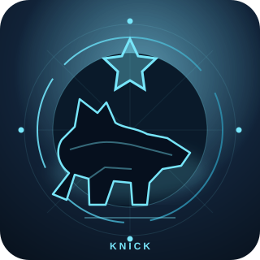
01 / AWARENESSKNICK
Recognize the situation.
SIX DISTINCT DOGS · ONE UNBROKEN SEQUENCE
Six identities. Six constructive decisions. One sovereign, user-controlled path through awareness, action, and reflection.
KNICK·KNACK·PADDY·WHACK·DOG·BONE
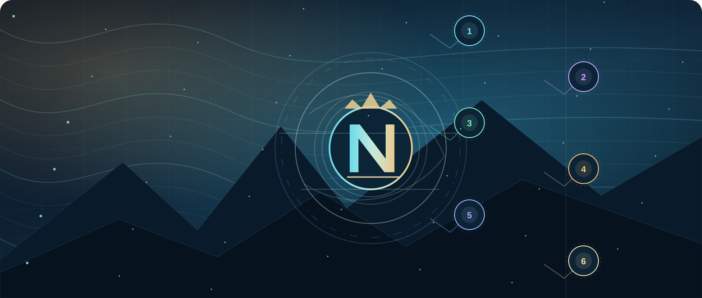
THE CHARACTER SYSTEM / SIX ORIGINAL EMBLEMS
Each dog is a distinct identity with its own visual signature. The order and names remain fixed in every view.

01 / AWARENESSRecognize the situation.
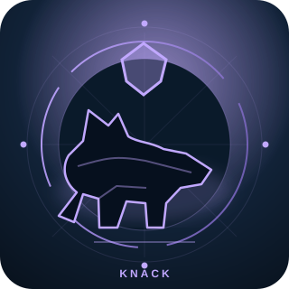
02 / INGENUITYFind the workable angle.
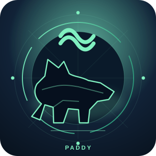
03 / RHYTHMRegulate the pace.
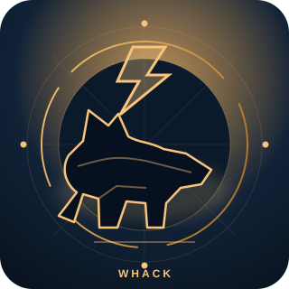
04 / DECISIONChoose nonviolent action.
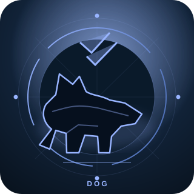
05 / FOLLOW-THROUGHStay connected and move.
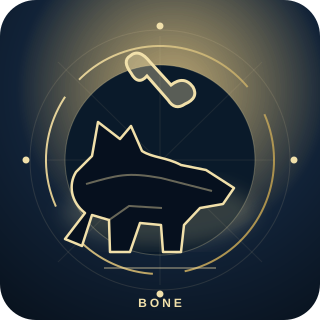
06 / RESTORATIONReflect and restore ease.
CORE PRINCIPLES
This program does not decide what you feel, diagnose anyone, or guarantee an absence of stress. Its six-step rhyme mapping is a creative decision aid, not a validated clinical sequence.
01 · STATE MACHINE
CURRENT STEP
02 · FIVE PLANES / PARALLEL FORWARD MOTION
The source fixes Mind, Body, and Shadow. Soul and Spirit were named but not assigned six individual positions in the final correction, so their slots remain editable and explicitly user-authored.
| Plane | 1 | 2 | 3 | 4 | 5 | 6 |
|---|
The letter/name associations are symbolic interpretations. They do not prove Hebrew etymologies, altered consciousness, or physical dimensional mechanisms.
03 · SOFTWARE ⇄ PHYSICAL HARDWARE
New companion: Micro Edge + Macro Fabric local Python runtime, Docker instructions and optional encrypted vector files. This package is separate from the browser and requires a user-run local process.
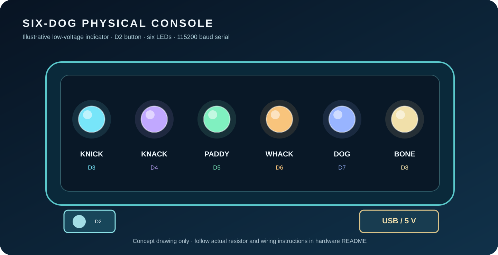
Arduino Uno compatible board, one momentary button and six low-voltage LEDs. Each indicator corresponds to a dog/stage. The included sketch cycles steps and communicates over a serial port.
Simulation reflects the current browser stage, not a detected physical device.
Copy the versioned serial command, or explicitly connect a supported device through your browser and send the current step.
SD1 STEP 1
Not connected. A USB device is never accessed automatically.
04 · MACRO-TOPOLOGY ⇄ MICRO-ENGINE
The registry, local storage, event bus and deterministic packet inspector operate without a cloud AI account. The Six Dogs stage selection updates this local topology view; no external commands execute automatically.
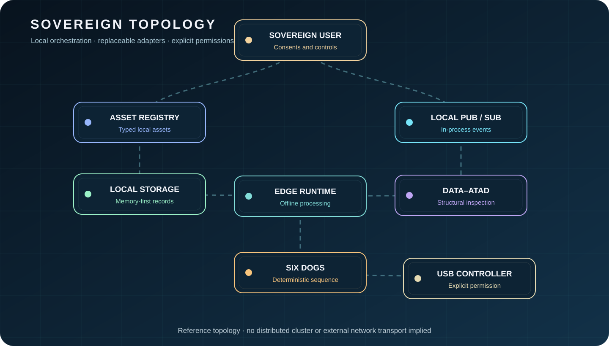
Initializing local graph.
No packet processed.
Gate 1 means a defined check passed. Gate 0 means hold for review, never automatic deletion or proof of deception.
05 · FULL TECHNOLOGY MAPPING
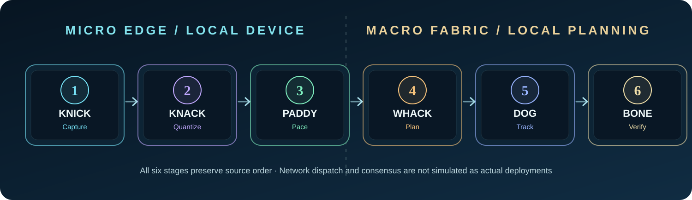
06 · OWNERSHIP / PRIVACY
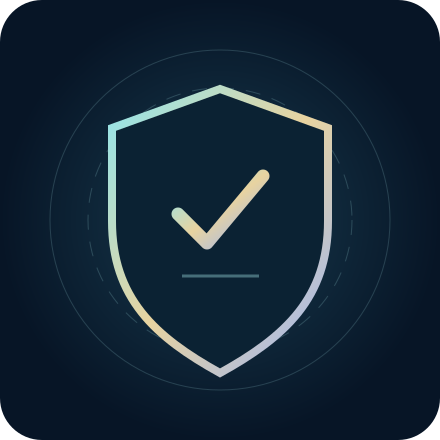
Notes remain in page memory by default and disappear upon reload. Opting in stores them in your browser's localStorage, which is not encrypted. Do not enter passwords, health records, children's private information or credentials.
Offline-first. No remote data connection.
The five- and seven-stage grief lists are descriptive teaching frameworks, not an obligatory order or a scientific promise that people can bypass depression. This app allows revisiting a step whenever useful. “WHACK” refers only to a clear, nonviolent decision. “BONE” represents connection, care and resolution—not a guaranteed stress-free biological state. Consensual adult intimacy may be relaxing for some people but is not required by or measured in this system.